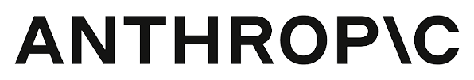
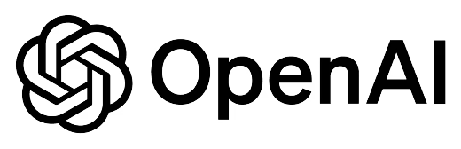
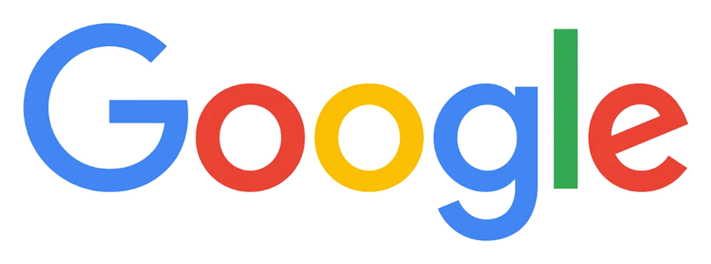
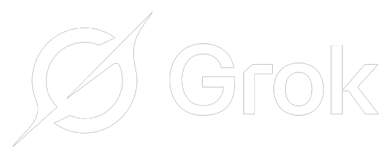
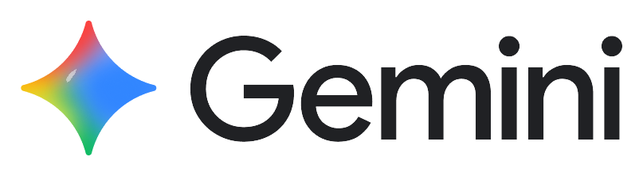

Respuestas en vivo
Ves el texto aparecer mientras el modelo escribe (OpenAI y compatibles, y Anthropic). En modo Lento se desactiva porque revisa su respuesta.
CREATOR · DOCUMENTACIÓN · GUÍA
GhostUe46 conecta con OpenRouter, GROQ, Grok, Gemini, Anthropic (Claude), NVIDIA, Meta, Llama local y OpenAI. Las respuestas aparecen en vivo, programa con un editor que verifica la sintaxis, busca en la web, analiza tus archivos e imágenes, genera imágenes y vídeo, y todo se ve como tú quieras: 8 temas, +270 fuentes, imagen de fondo y sets de iconos propios.
Ves el texto aparecer mientras el modelo escribe (OpenAI y compatibles, y Anthropic). En modo Lento se desactiva porque revisa su respuesta.
Python se ejecuta de verdad con Pyodide (WebAssembly). JavaScript y HTML se ejecutan en el navegador; Java, C, C++ y C# pasan por un verificador de sintaxis. Cada bloque de código tiene Copiar, Abrir en Editor y Descargar.
Ayuda con shaders y pipelines en DirectX/HLSL, OpenGL/GLSL y Vulkan. Siempre con aviso de fase BETA: revisa el código antes de usarlo.
Si la activas, consulta DuckDuckGo y responde usando lo encontrado, con enlace a la búsqueda completa.
Esta edición se centra en la conversación con el proveedor de chat configurado, la generación de código y el procesamiento de archivos. La generación integrada de imágenes y vídeo no está incluida.
Lee PDF, Word, Excel, ZIP, código, texto e imágenes (también con captura de pantalla y arrastrar y pegar).
Dile «recuerda que…» y guarda la nota en tu navegador. La editas o la borras cuando quieras.
Dicta tus mensajes con el micrófono (según lo que permita tu navegador).
Temas, colores, cristal, fuentes, imagen de fondo, icono del sitio y temas guardados con aviso de legibilidad.
Chats con buscador, fijado y renombrado; contador de uso por proveedor; copia de seguridad completa e instalación como app.
Un laboratorio visual al final de esta página: 10 ilusiones ópticas animadas que controlas en tiempo real (patrón, intensidad, velocidad y paleta). Baja desde la zona naranja de Claude para entrar.
Música ambiental con fundido cruzado al hacer scroll (Happy ↔ Space), sonido de clic en botones y aviso sonoro en las notificaciones. Los sonidos de interfaz se apagan con un interruptor en Configuración.
El botón flotante del chat activa un modo. Y el selector de velocidad decide cuánto se esfuerza cada respuesta.
Planifica, investiga en DuckDuckGo y razona antes de responder. Tarda un poco más y no va con Rápido.
Más experto en lenguajes. Revisa su propio código con el verificador de sintaxis real y se corrige.
Crea sitios web y archivos para instalar. Si hace un HTML, ves su vista previa funcionando, y puedes bajar todo en ZIP.
Mira tus imágenes y analiza PDF, Word, Excel, ZIP, código y texto.
Respuestas breves y directas, con menos historial y sin ronda de corrección.
Va al grano y envía menos historial, así que responde un poco más rápido.
Más cuidadoso: razona paso a paso y revisa su respuesta antes de entregarla.
Cada proveedor se configura con tu propia clave en Configuración. Si dejas el campo «Modelo» vacío, GhostUe46 usa el modelo recomendado de abajo. Puedes escribir cualquier otro modelo que tu cuenta tenga disponible.
| Proveedor | Modelo por defecto | Clave | Notas |
|---|---|---|---|
| OpenRouter | openai/gpt-3.5-turbo | Sí | Un solo acceso a muchos modelos. Recomendado para empezar. |
| GROQ | llama-3.3-70b-versatile | Sí | Inferencia muy rápida. |
| Grok (xAI) | grok-3-mini | Sí | Modelos de xAI. |
| Google Gemini | gemini-2.5-flash | Sí | Usa la interfaz compatible con OpenAI de Google. |
| Anthropic (Claude) | claude-sonnet-5-5 | Sí | Conexión directa desde el navegador; acepta imágenes. Escribe otro modelo Claude si lo prefieres. |
| NVIDIA | meta/llama-3.1-70b-instruct | Sí | Endpoints acelerados de NVIDIA. |
| META (Llama API) | Llama-3.3-70B-Instruct | Sí | API compatible con OpenAI de Meta. Si tu cuenta usa otra dirección, ponla en «Endpoint personalizado». |
| LLAMA (local) | llama3.2 | No | Llama en tu propio equipo con Ollama (localhost:11434). Gratis y privado. |
| OpenAI | gpt-4o-mini | Sí | Modelos oficiales de OpenAI. |
¿Otro servicio compatible con OpenAI (LM Studio, vLLM, un servidor propio)? Pega su dirección en Endpoint personalizado. El contador de Uso por proveedor te muestra cuántos mensajes y tokens llevas con cada uno.
LA INTERFAZ SE DISUELVE. LA PERCEPCIÓN DESPIERTA.
Sigue bajando. En esta zona Claude toma el control del color: las ondas, anillos y reflejos se vuelven naranja fuego, ámbar, cobre y dorado. Cada patrón crea una ilusión distinta antes de que el mundo vuelva a mezclarse con el azul de GhostUe46.
Dos capas de líneas parecen moverse a distinta velocidad.
El centro parece hundirse aunque la pantalla sea plana.
La perspectiva genera una profundidad imposible.
Las líneas rectas se curvan al seguir el patrón.
UNA CONSTELACIÓN DE IDEAS · GRACIAS POR INSPIRARME





Gracias a Anthropic por crear Claude y por poner a mi alcance una herramienta que me ha ayudado a explorar ideas, organizar conceptos y dar forma a GhostUe46. Claude ha sido una compañía valiosa durante este camino de aprendizaje y creación. ❤️
Gracias a OpenAI y ChatGPT por ayudarme a aprender, pensar de otra manera, encontrar soluciones y seguir adelante cuando el código se complica. Cada explicación y cada nueva idea se han convertido en oportunidades para mejorar este proyecto. ❤️
Gracias a xAI por desarrollar Grok y aportar otra perspectiva al mundo de la inteligencia artificial. Su existencia invita a mantener la curiosidad, cuestionar ideas y experimentar con nuevas posibilidades. Toda perspectiva nueva puede encender una chispa creativa. ❤️
Gracias a Google por desarrollar Gemini y acercar herramientas que ayudan a investigar, comprender temas difíciles y transformar preguntas en ideas concretas. Su trabajo también me anima a seguir aprendiendo y a hacer crecer GhostUe46 paso a paso. ❤️
GhostUe46 es un proyecto independiente. Estos agradecimientos no implican afiliación, patrocinio ni respaldo oficial. Los nombres y logotipos pertenecen a sus respectivos propietarios.
DESCIENDE PARA ENTRAR EN LA ILUSIÓNEl naranja se ha fundido con el azul. Ahora manipula la ilusión: cambia el patrón, la intensidad, la velocidad y los colores en tiempo real.
Un laboratorio visual interactivo: cambia patrones, color, intensidad y velocidad en tiempo real.
Aunque no tenga un servidor propio como otras IA, GhostUe46 sigue creciendo gracias al tiempo, la creatividad y el esfuerzo que hay detrás de cada mejora.
Si este proyecto te gusta y quieres ayudarme a mantenerlo y añadir nuevas funciones, cualquier aporte es bienvenido. No es obligatorio: tu apoyo y usar el proyecto ya significan mucho. 💜
HECHO CON DEDICACIÓN · GHOSTUE46